關於鏡頭和機材
=
我感覺我很少詳細解說我的鏡頭和機材。正好最近新年入貨，也入坑了膠片攝影，順道來介紹吧。
依舊先疊甲：機材的數據請自行網上查看。機材上如果有描述錯誤也請務必指出，而不要抓著機材不好就不好然後一頓輸出，我在此感謝各位合作。
還有就是，攝影作品似乎不太好放github（）不過沒關係，放這裡的應該都是壓縮版本。
後期追加：我忘記拍相機本體啊啊啊啊啊啊我之後補上
=
數位相機是索尼的a6000L，一般會用的鏡頭是預設的16-50變焦鏡，淘寶某雜牌的25mm，以及真的不知道哪來的85mm定焦。這相機是我哥當年自己囤錢買的二手相機（對的到我手上可能就是三手），老哥退坑攝影後連同配件一同送到我手裡。
此物壞了一個microUSB充電口，當時送修的時候師傅說電路板也要一併換，搞得我以為機器沒救了，實際上只要換一個電池就能完事（）其他部分安然無恙，整體保存得很好。
實操上手的時候，變焦鏡自帶的對焦不太准，在拍風景等場合都會選擇全手動對焦。但儘管如此，在街拍等能自動就自動的場景，還是會使用自動對焦。
至於定焦鏡，25mm不過不失，而85mm則是被我摔了一次，儘管沒有影響成像，仍然落下了不該有的傷痕。
以下是一些demo。
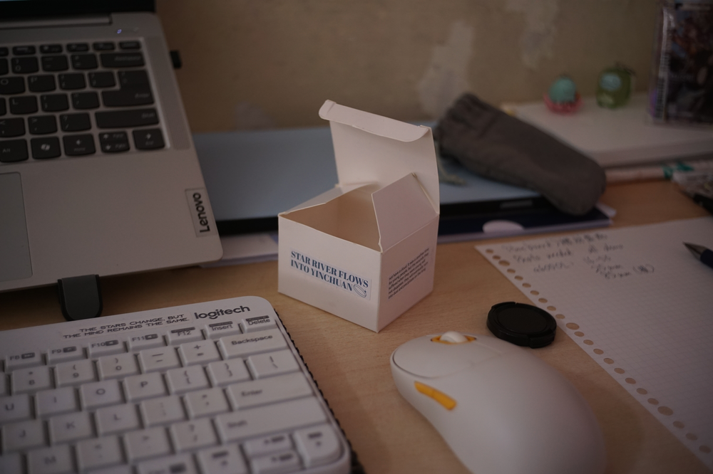
^ 這張是25mm拍的，柔和的光線，很舒服。
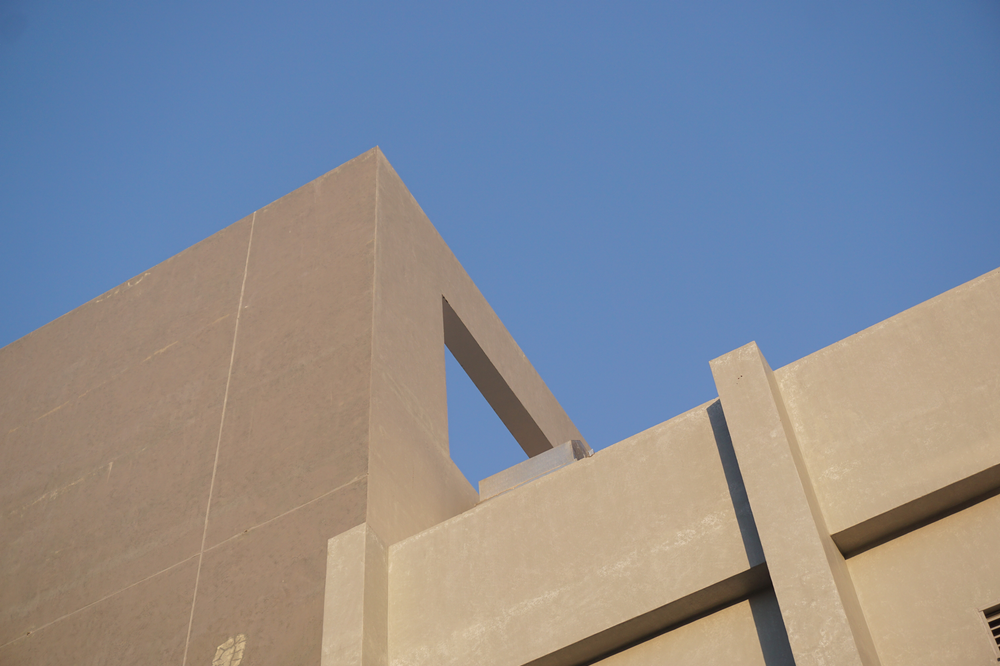
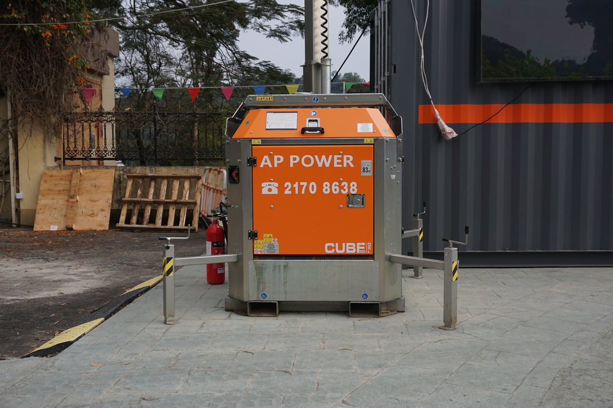
^ 非常方正地拍了張非常方正的大電池。竟然是在許願樹附近找到的，大埔自然之中很少有的工業味！
85mm定焦鏡擇日更新。
=
作為愛搗鼓舊物的我，CCD相機自然也有一個。
手上的是Olympus fe-46。電池倉稍有接觸不良，但只要用的是滿血的電池，就沒有大問題。
圖像的光很柔和，一些情況下甚至不及傻瓜reto銳利，十分適合沒錢的時候帶著四處走。
以下是demo：

^ 顯示屏十分之低端，比索尼還糟糕。看到的一切都可以說是像素風了。
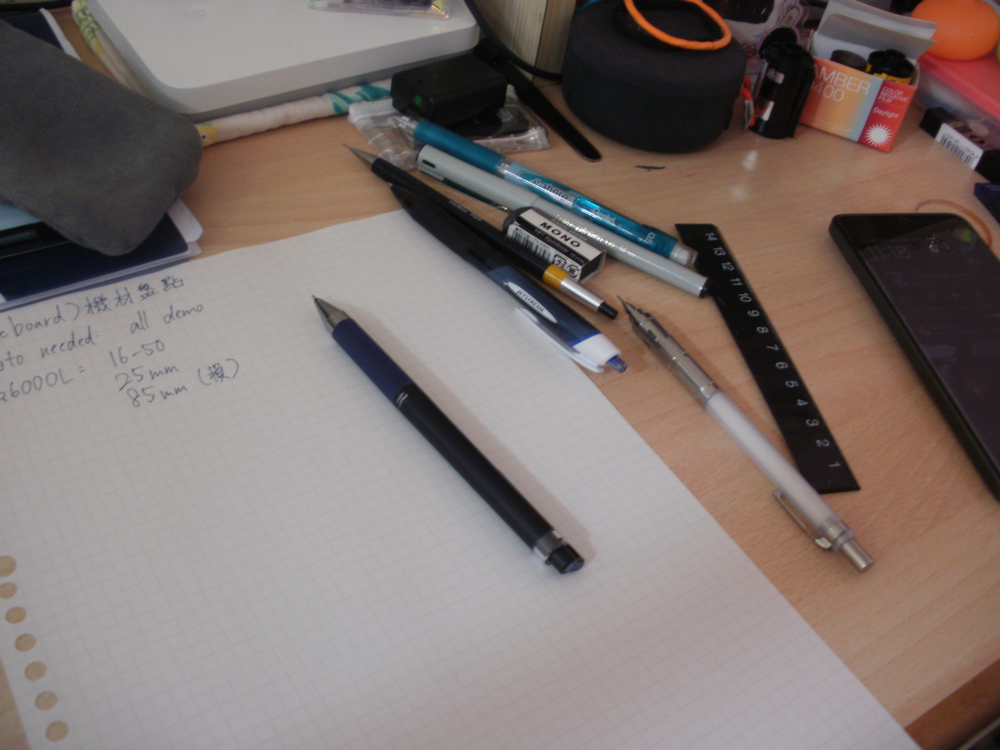
拍出來如是說。自動模式下快門為了補償房間的低光而被拉長，肌無力的博主手抖影響十分明顯。
可以看到光線表達得十分柔和，但放棄了對焦。
=
菲林相機方面......哎喲這可是一個意外之喜（）
會入坑如此費錢的坑，那是因為我的推在vlog裡買了一個半格菲林相機，而那部我本來就想要（）
（對的就是此物，我特意買的同款。）
這部是Kodak Ektar H35，手感頗膠，看到做工會害怕漏光的程度。同位款有可以搭載更多功能的H35N，但是多給點錢傻瓜機還不如買一個更有性價比的旁軸，而且這樣就不是偶像同款了，所以還是決定入手這部。
雖然我知道新手一上來就用半格，對學習構圖什麼的不好，但是你止不住半格她一卷拍兩倍的照片便宜啊！
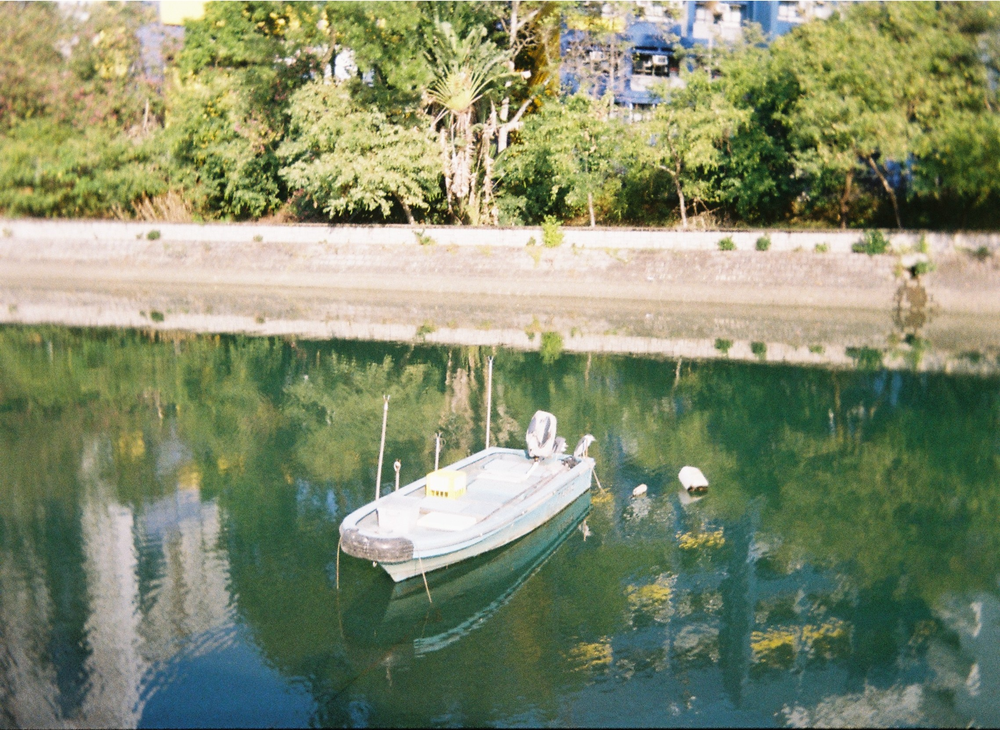
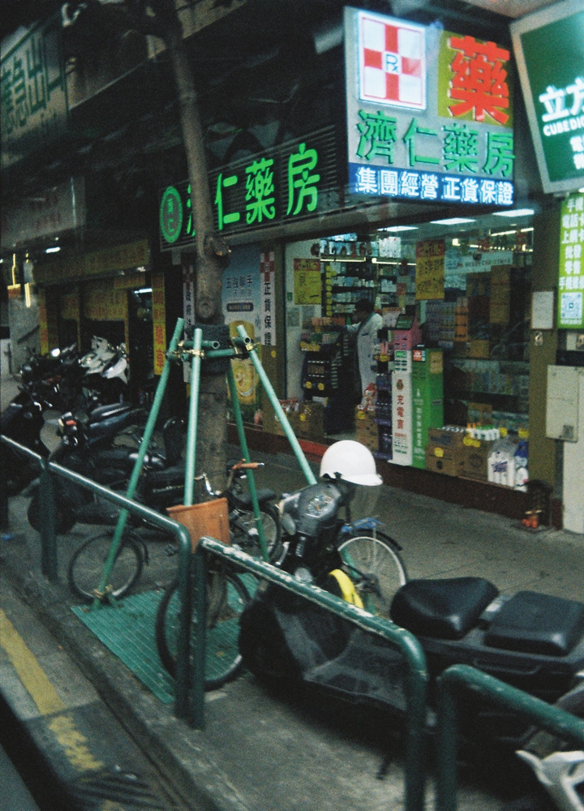
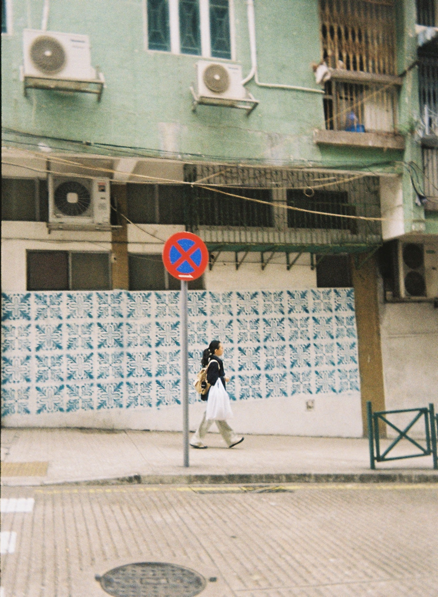
（話說，半格的這72張我拍了半個月，而大忙人小偶像拍了一年有多還沒拍完。）
此物的閃光燈已經壞掉，但是我本身就不是閃光燈派，加上適當注意燈光，使得她在我手上就算是iso200的菲林也十分足夠使用。
=
說完第一部入坑機，就該說其他浪費金錢的東西了。
我第二部買的是reto ultrawide。圖得就是她並不是半格（）
平平無奇的一部，但成像比想象中銳利，直接上demo。菲林片是fuji400(aka ultramax400
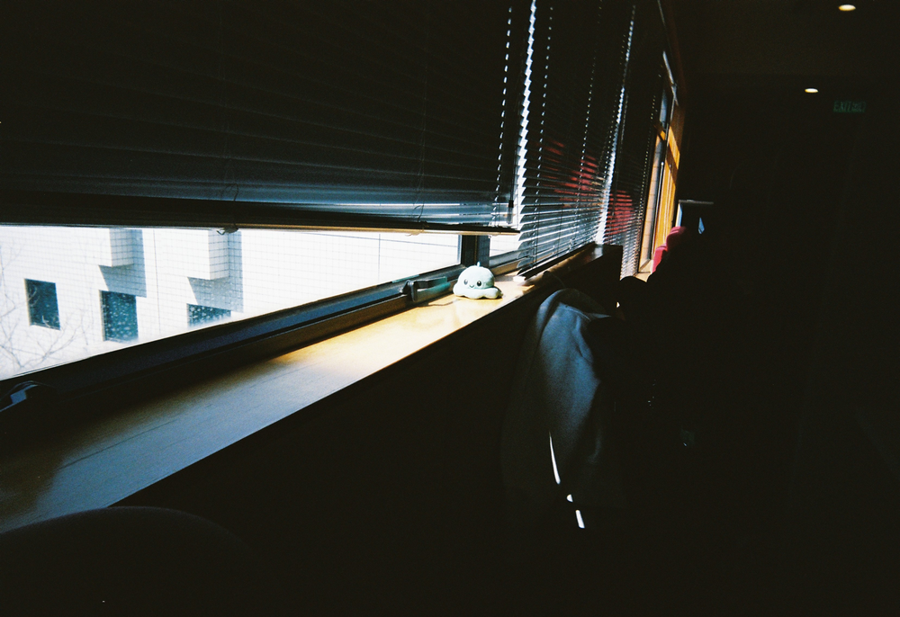
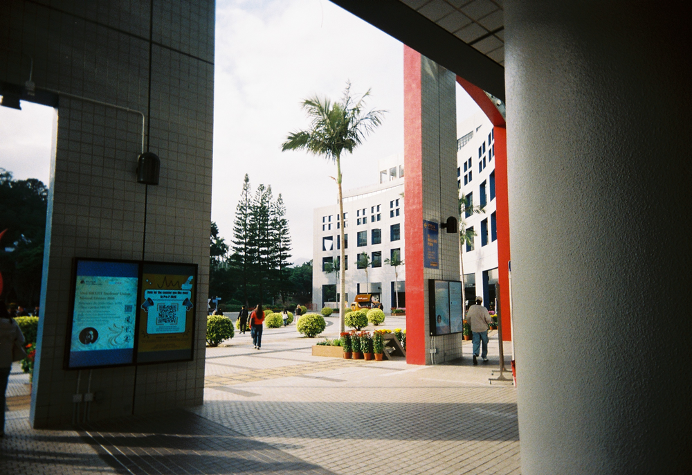
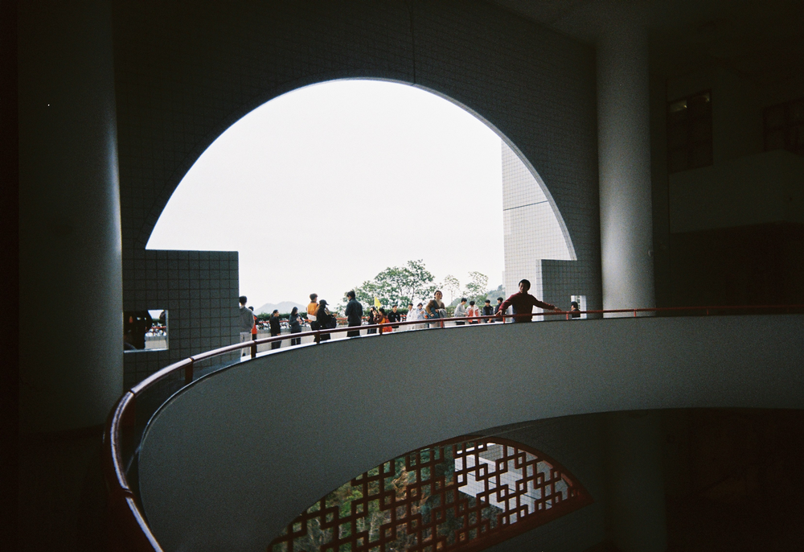
=
第三部是重頭戲！人稱旁軸七劍的minolta 7s
港幣400入手此物&下一部介紹的傻瓜機，性價比應該算差不多了
此物的黃斑對焦不是很會用，多手持的時候還會粘上鐵鏽味，但是拉片的手感真的不得了哦喲（
測光沒有電池無法確定能不能用，但是鑒於自己對手機和目測測光都頗有信心，最後忽略這個缺點就要下相機。
重是很重，但無阻我從此掉進菲林的坑...太好看了
菲林用的是lomo metropolis，拍上水站和大學。
清冷的發色和黑白又有所差分，越看越有趣的一卷。
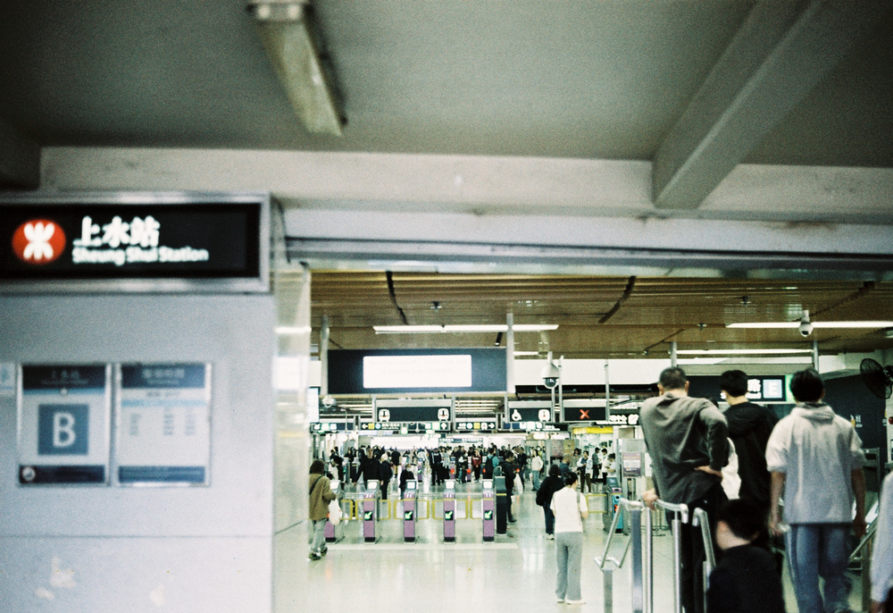
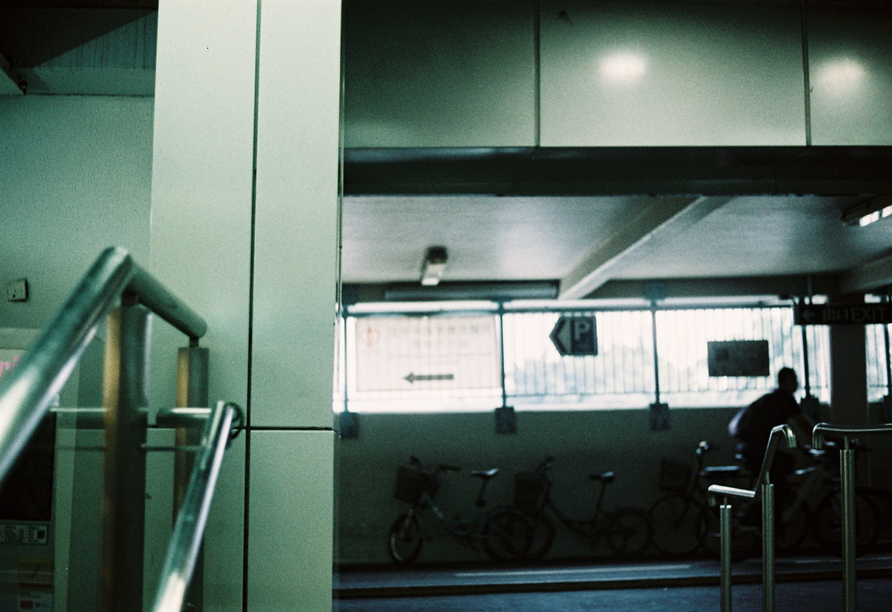
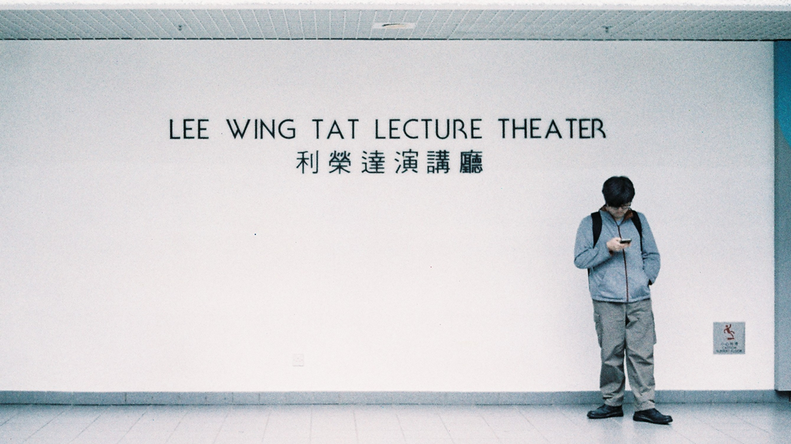
=
第四部是Ricoh L20，傻瓜機一部。感覺沒啥好說。功能齊全，就是測試用的這卷lomo classic遇上陰天曝光不足（明明絕大部分我都拉高一檔了仍然如此），顆粒度大增，感覺不會用第二次。
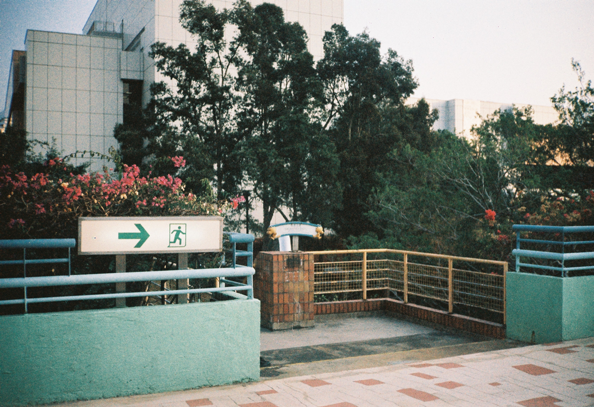
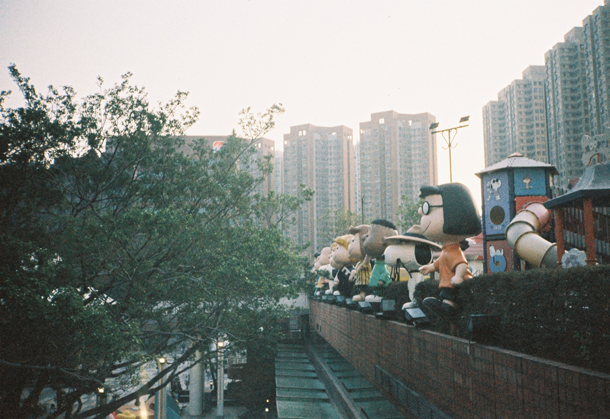